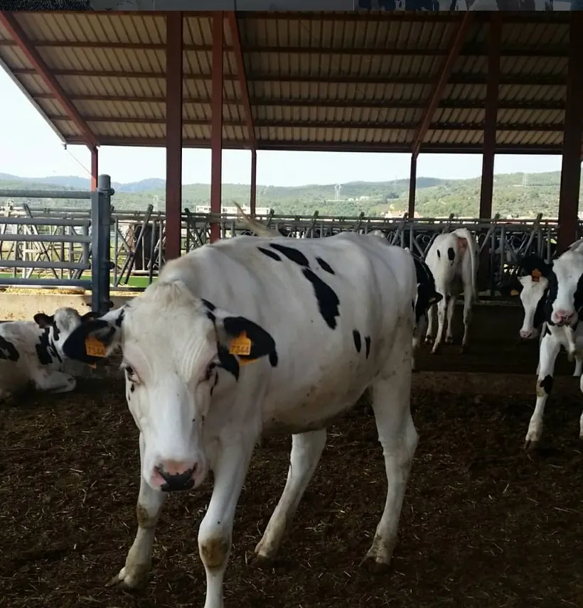
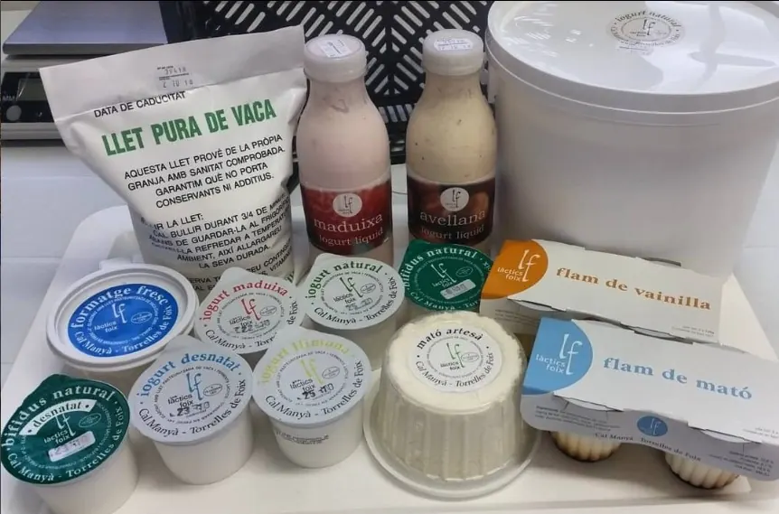
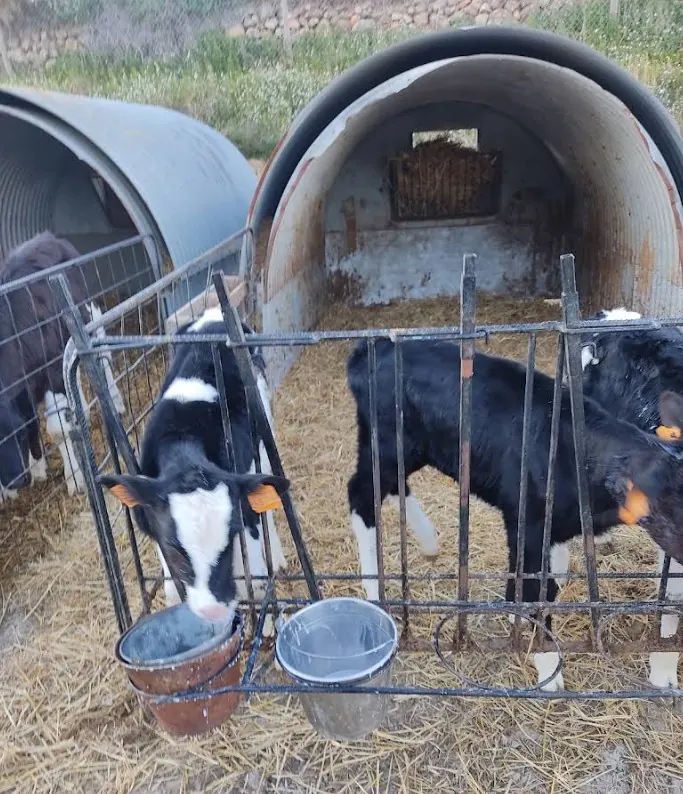
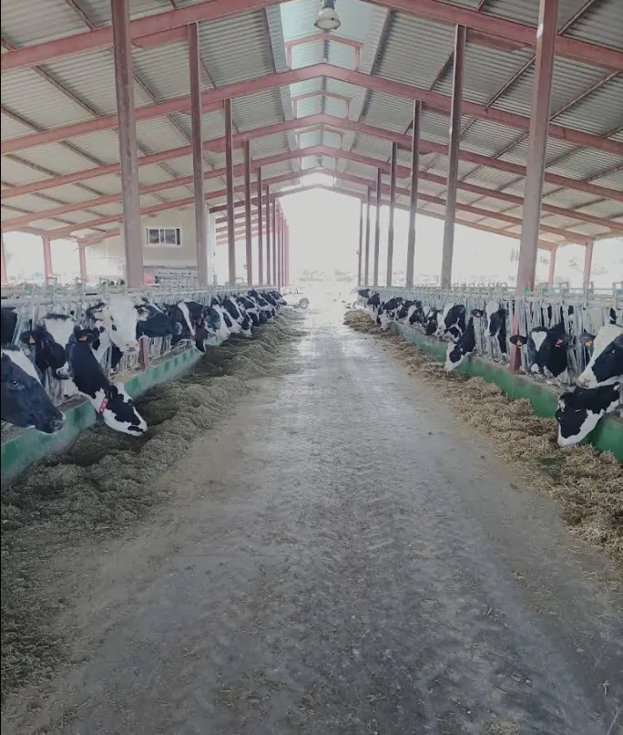
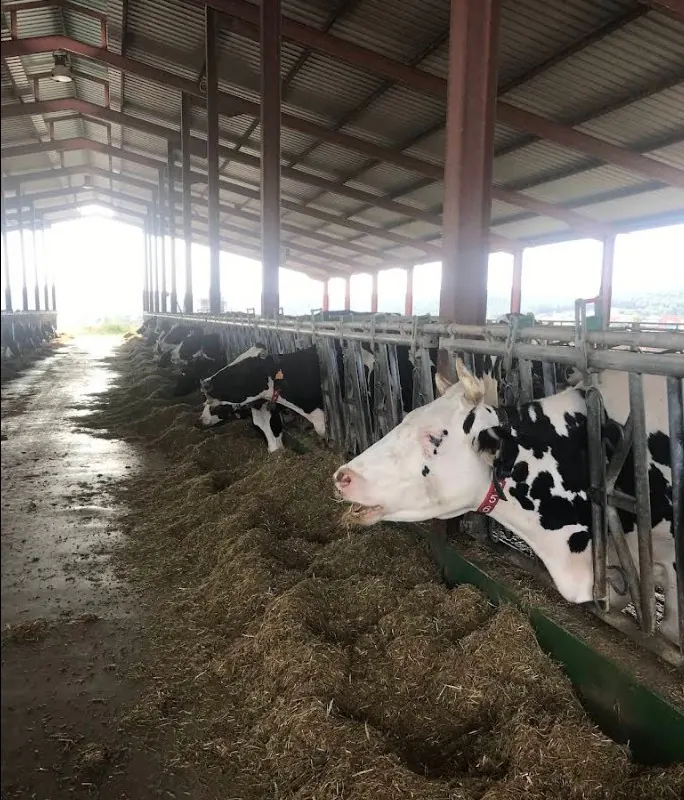
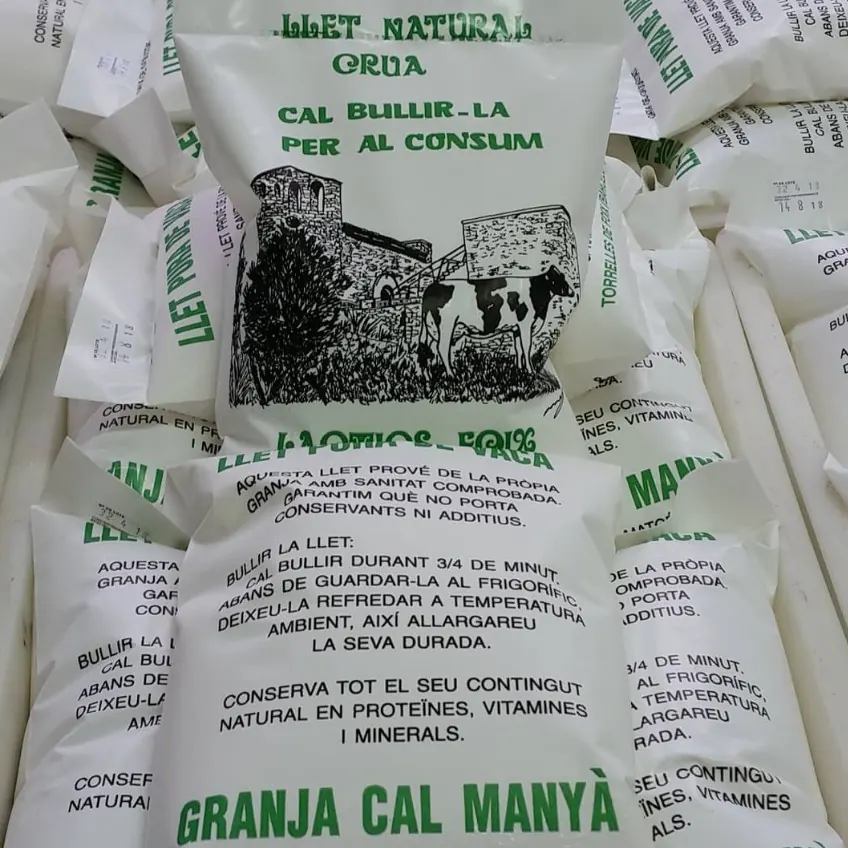
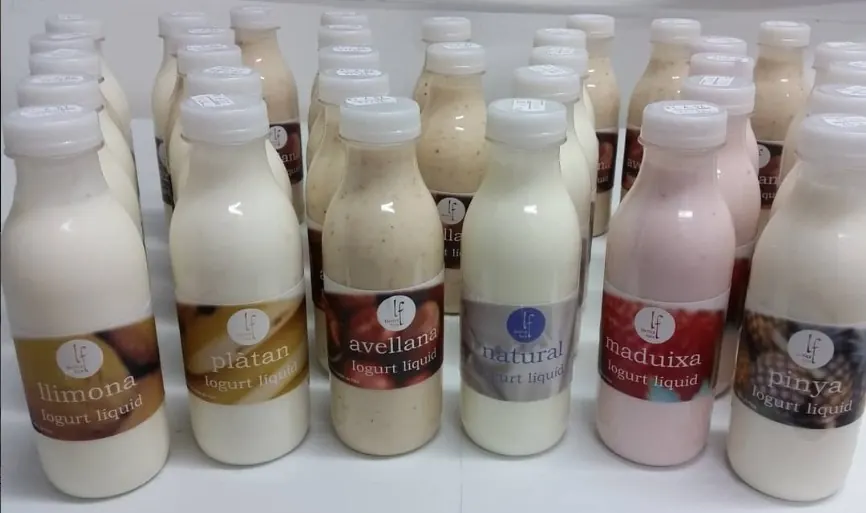
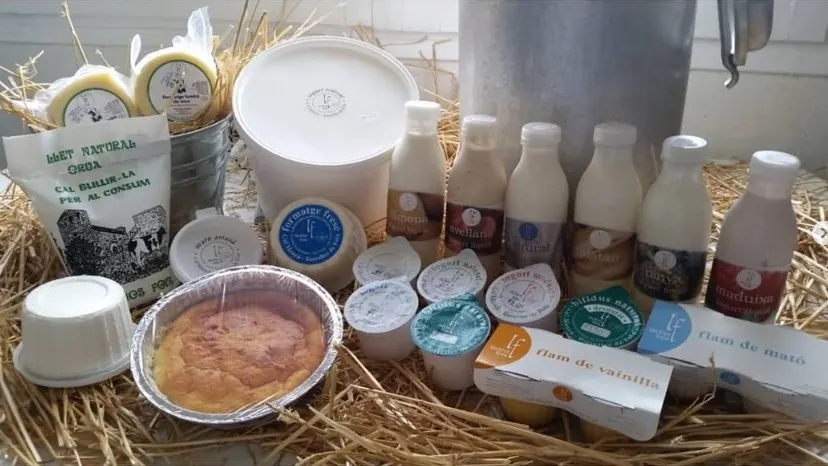

Vaques adultes
Espai, confort i rutines estables per reduir l’estrès i cuidar la salut del ramat.
Cal Manyà · Torrelles de Foix
De la nostra granja,
a casa teva.
Llet i productes làctics artesans elaborats a Torrelles de Foix, amb la llet de les nostres vaques.



La granja
A Cal Manyà cuidem el ramat, la terra i l’elaboració amb una mirada propera. Som granja i obrador: la llet surt de casa i es transforma aquí mateix, a Torrelles de Foix.
La proximitat no és un eslògan. És veure cada dia les vaques, seguir el ritme de la munyida i elaborar iogurts, mató, formatge fresc i postres amb la calma que demana un producte honest.


Història
Làctics Foix és una explotació familiar de Cal Manyà. Pere Formatgé va créixer entre vaques i dirigeix la granja amb l’ofici heretat a casa, al costat de Josep Bages.
Benestar animal
El benestar del ramat és la base de la llet. Les Holstein viuen en instal·lacions pensades per al descans, el moviment i una alimentació cuidada. Els vedells creixen amb atenció individual des del primer dia.
Espai, confort i rutines estables per reduir l’estrès i cuidar la salut del ramat.
Cria atenta, llits de palla i seguiment continu durant les primeres setmanes de vida.
La nau oberta, la menjadora i el maneig diari del ramat a Cal Manyà.
Tecnologia
La munyida robotitzada no substitueix la mirada de la granja: l’acompanya. Cada vaca s’acosta a munyir-se quan ho necessita. El sistema identifica l’animal, en fa el seguiment i ajuda a controlar la qualitat de la llet i el benestar del ramat.
Productes
Elaboració pròpia a l’obrador de Cal Manyà, amb la llet de les nostres vaques.

Llet de la pròpia granja, sense conservants ni additius. Cal bullir-la abans del consum.
Elaborats a l’obrador de Cal Manyà.

Per beure, en ampolla.
Mató fresc de la granja, tal com el preparem a l’obrador.

Postres de l’obrador.
Formatge fresc de granja i pastís de formatge elaborat a casa.
No publiquem preus a la web: pregunta disponibilitat a la botiga o al 938 972 191.
Elaboració pròpia
Munyim, recollim i transformem. L’obrador treballa amb la llet de les nostres vaques per obtenir iogurts, mató, formatge fresc i postres amb recorregut curt i sabor reconeixible.
Cada lot es fa amb ritme d’obrador petit: atenció, higiene i el gust de producte fet aquí.
Sostenibilitat
Treballem a Torrelles de Foix, en un paisatge de vinyes, boscos i poble. Cuidar el ramat, aprofitar la proximitat i elaborar a casa és la nostra manera de ser responsables amb l’entorn.
De la granja a la botiga del poble. Menys recorregut, més traçabilitat.
Instal·lacions pensades per al confort del ramat i per ordenar residus i feina diària.
La granja forma part de Torrelles de Foix i del paisatge que volem mantenir viu.
Reconeixements
El 25 de març de 2011, a la masia de Danone a Parets del Vallès, Làctics Foix va rebre el I Premi a la Competitivitat Sostenible. El certamen reconeixia el treball dels ramaders que col·laboren amb la companyia i posava en valor instal·lacions modernes en un entorn rural i el relleu generacional.
El millor aval, però, continua sent qui torna a la botiga a buscar llet, iogurt o mató.
Visites
Es poden visitar les instal·lacions per veure com vivim la granja. Cal contactar abans per confirmar disponibilitat: no hi ha reserva automàtica, t’atendrem personalment.
Galeria
Botiga i contacte
Aquí trobaràs la llet i els productes elaborats a la granja. Per visites, comandes o qualsevol consulta, escriu-nos o truca.
Per protegir la teva privacitat, el mapa de Google només es carrega si ho demanes.